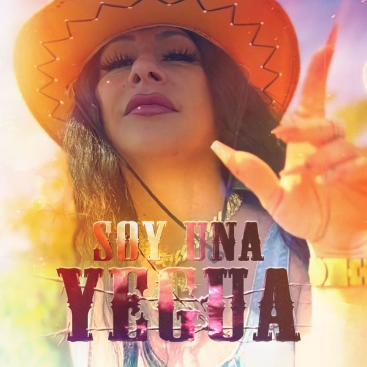
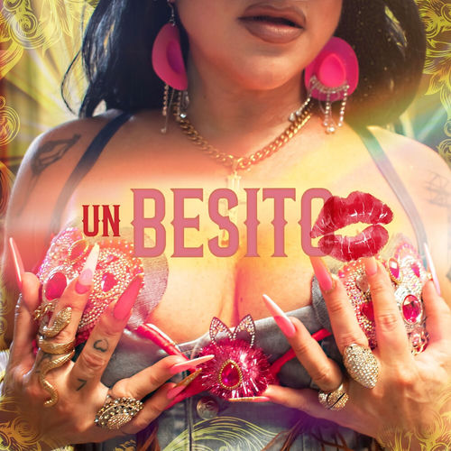
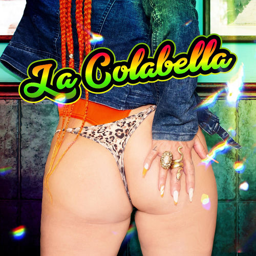
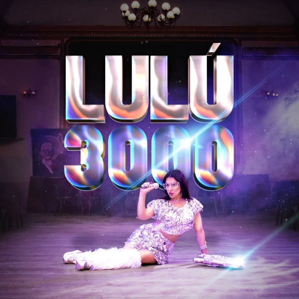
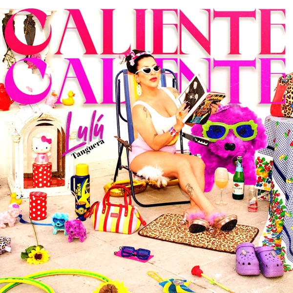
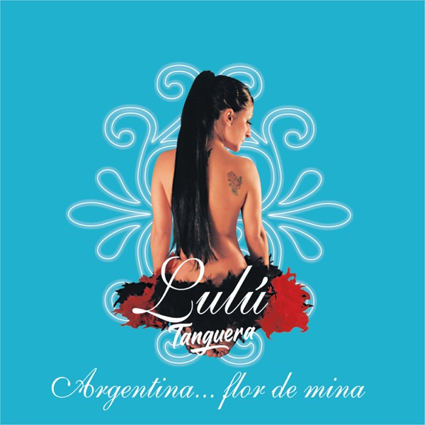
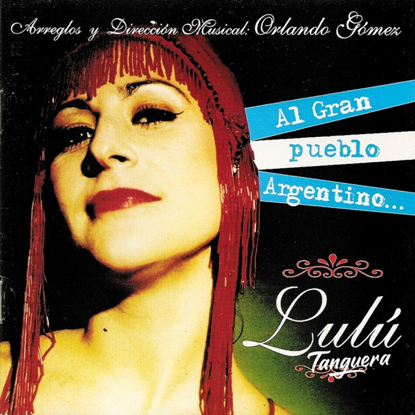
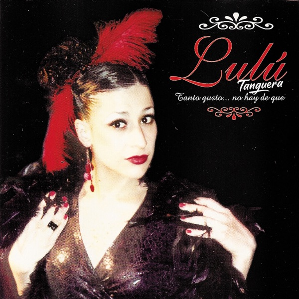

Discografía
2026 — ¿Podrán?

2026 — Soy una Yegua

2024 — Un Besito

2023 — La Colabella

2023 — Lulú 3000

2022 — Caliente Caliente
2021 — Fiesta
2017 — Me enamoré una vez

2007 — Argentina... flor de mina

2004 — Al gran pueblo argentino... Lulú

2001 — Tanto gusto... no hay de qué
scroll ↓